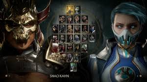
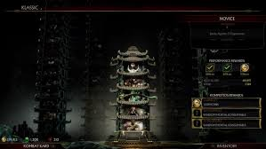
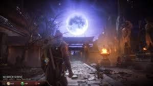

Nos encontramos nuevamente con un juego de lucha en 2D donde la violencia extrema y la sangre son elementos predominantes. La disposición de los controles resulta familiar para quienes han seguido la saga en los últimos años, con cuatro botones de ataque, cada uno asignado a una extremidad, además de un botón extra para la defensa. Los comandos son intuitivos y fáciles de ejecutar, permitiendo llevar a cabo una gran variedad de golpes y técnicas. Un aspecto que nos ha sorprendido gratamente es la impresionante cantidad de movimientos y mecánicas secundarias disponibles para cada personaje, lo que ofrece un sinfín de posibilidades a la hora de combatir y encadenar combos en diversas situaciones, algo que sin duda encantará a los jugadores más comprometidos y competitivos.
El sistema de energía se ha dividido en dos medidores independientes. Por un lado, está el de ataque, que nos permite potenciar movimientos especiales. Por otra parte contamos con el de defensa, indispensable para realizar maniobras defensivas y de recuperación, además de interactuar con ciertos elementos del escenario, ya sea utilizándolos como armas o como una vía de escape. Ambos medidores se regeneran rápidamente, lo que permite un uso constante durante los combates. Otra novedad importante es la incorporación de golpes devastadores, una serie de ataques que, si se cumplen ciertos requisitos, activan una secuencia especial. Por último, no podemos pasar por alto los Fatal Blows, las técnicas más poderosas de cada luchador. Este movimiento solo puede ejecutarse cuando la barra de vida cae por debajo del 30%. Si el golpe inicial impacta, se desata una impresionante y brutal animación en la que castigamos al oponente con una gran cantidad de daño.
Todas estas cualidades se ven potenciadas por un excelente elenco de personajes, cada uno con un estilo único y bien diferenciado. Excluyendo a Shang Tsung y Shao Kahn (ambos disponibles como contenido descargable, aunque este último se obtiene como bonificación por reserva), Mortal Kombat 11 cuenta con un total de 24 luchadores distintos. Entre las nuevas incorporaciones destacan Kollector, Geras y Cetrion. El título también cuenta con un editor de personajes que nos permite personalizar varios aspectos de nuestros luchadores. A través de esta herramienta, podemos elegir tres piezas de equipamiento distintas, así como modificar su animación de entrada y victoria, su apariencia o skin y sus movimientos especiales.
Se destaca el espectacular Modo Historia, cuyo desarrollo sigue una estructura cinematográfica, intercalando secuencias de vídeo con combates. En ciertos capítulos, podremos elegir entre dos personajes jugables, aunque en la mayoría de los casos será la narrativa la que determine a quién controlaremos.Una vez finalizada la historia, el principal contenido lo encontramos en las Torres, que se dividen en clásicas y temporales. Estas últimas se actualizan periódicamente, ofreciendo nuevos desafíos en los que enfrentaremos combates con condiciones especiales que, por lo general, jugarán en nuestra contra. Para contrarrestar estas desventajas, podremos hacer uso de una amplia variedad de objetos consumibles, los cuales nos otorgarán habilidades activas durante las peleas. Entre ellas, encontramos escudos que nos protegen del fuego, curas que restauran la mitad de nuestra salud e incluso la posibilidad de invocar a otro personaje para que nos ayude en el combate.
Otro de los elementos clásicos de la saga que regresa en esta entrega es la Kripta, aunque esta vez se presenta más extensa y atractiva. En esta ocasión, se ha diseñado como una aventura en tercera persona, permitiéndonos controlar a un ninja anónimo que debe explorar la isla de Shang Tsung, el mismo escenario donde tuvo lugar la historia del primer Mortal Kombat. Lo más destacado es la complejidad del mapa, con un diseño similar al de los juegos tipo Metroidvania. Está repleto de pasadizos ocultos, caminos alternativos, secretos y rompecabezas que hacen que la exploración sea increíblemente entretenida y gratificante.
Mortal Kombat 11 es, sin duda, la entrega más destacada de toda la saga. Su jugabilidad ha sido perfeccionada hasta alcanzar un nivel excepcional, y la abundancia y calidad de sus contenidos lo convierten en un título imprescindible para los fanáticos del género. Además, su apartado visual ofrece un espectáculo impresionante en cada momento. Cada detalle ha sido trabajado con esmero, reflejando el esfuerzo y la pasión en su desarrollo.